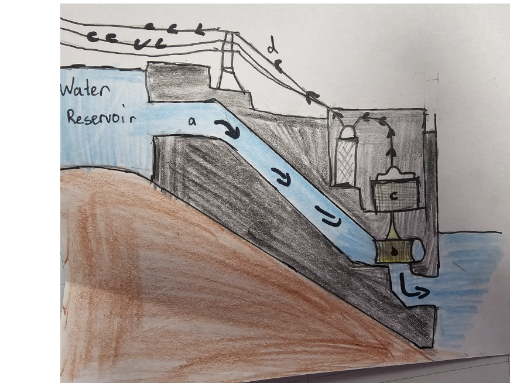

Hydroelectricity (also called hydropower) converts the potential and kinetic energy of flowing water into mechanical energy, which then drives generators to produce electricity.
There are 3 types of hydropower:
| Advantages | Disadvantages |
|---|---|
| Renewable and sustainable: Hydropower relies on the natural water cycle and does not run out as long as water flows. | Environmental impact: Dams disrupt ecosystems, alter river flow, and block fish migration. |
| Low greenhouse gas emissions: It generates electricity without burning fuel, reducing pollution and climate impact. | Displacement and social impact: Large reservoirs can force communities to relocate. |
| Reliable and flexible: Water flow is steady, and dams can adjust output to meet peak demand quickly. | High upfront construction cost: Building dams and infrastructure is expensive and time−consuming. |
| Cost−effective long term: Despite high initial costs, hydropower becomes inexpensive over decades due to low maintenance and no fuel costs. | Limited suitable locations: Only certain geographic areas can support hydropower facilities. |
| Supports grid stability: Pumped−storage systems allow energy storage and balancing of intermittent renewables like wind and solar. | Potential methane emissions: Reservoirs in some climates can emit methane from decomposing organic matter. |
| Additional benefits: Reservoirs can support irrigation, flood control, recreation, and local economic development. | Dependence on hydrology: Droughts or changing rainfall patterns can reduce power generation. |

The way hydropower works is a type of renewable energy that uses pressured water to generate electricity. Water gets held back in a reservior, gathering pressure. This happenes in a higher elevation. When the water goes down the penstock (A), it gathers speed. The water spins a turbine (b) which connects with the generator (c) which converts the kinetic energy to useful electric energy.